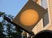
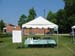
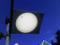

DAVID G. SIMPSON
Personal Web Site
| Home |
| Blog |
| Personal |
| Professional |
| Software |
| Photos |
| Reference |
| Nanopedia |
| Wiki |
| Contact Me |
| NASA Site |
| PGCC Site |
| SCHS Site |
| Esperanto |
| Moon Rocks |
| S-M Comics |
| Mouse Site |
| Art Gallery |
| Misc. Home |
| Page 1 |
MISCELLANEOUS PHOTO ALBUM: PAGE 1
|  The transit of Venus on June 8, 2004, as seen from Laurel, Maryland. The large yellow circle is the Sun, and the small black circle is Venus passing in front of the Sun's disk. Transits of Venus are quite rare; the next one will be in 2012. |
 My Esperanto booth during "Hot Dogs and Hobbies Day" at the NASA Goddard Space Flight Center. |
|
The pond at the NASA Goddard Space Flight Center in autumn. |
Queen Elizabeth visits the NASA Goddard Space Flight Center in 2007. |
|
|  The transit of Venus on June 5, 2012, as seen from Laurel, Maryland. The large white circle is the Sun, and the small black circle is Venus passing in front of the Sun's disk. Transits of Venus are quite rare; the next one will be in 2117. |
{kind=link}
{kind=link}
{kind=link}
{kind=link}
{kind=link}
| Page 1 of 1 |
|---|
Contact Information
I may be contacted at: